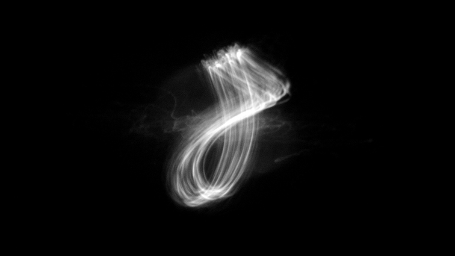
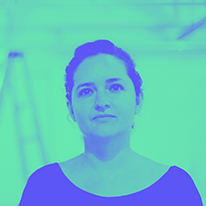
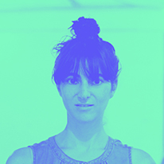

LAMAS LUISA PEREIRA / MANUELA DONOSO
LAMAS LUISA PEREIRA / MANUELA DONOSO
The Harmonic Series: Device #2
INTERACTIVE INSTALLATION.

The Harmonic Series explores our perceptions of dissonance, harmony, and noise through the superposition of sound vibrations and their visualization.
In Device # 2, two microphones capture the vibration of two voices (tones, percussive sounds, speech). Each is transmitted to a mirror attached to the membrane of a speaker. A point of light impinges on the first vibrating mirror, which renders it into a line. Reflected by the second mirror, the line becomes a figure. Two tones in harmony generate geometric figures; dissonances texturize their lines; percussive sounds generate chaotic figures.

Luisa Pereira (Brasil, 1983) is an artist and engineer based in New York City. Her installations, devices and prints explore music through computation and interactivity.
www.theharmonicseries.net

Manuela Donoso (Chile, 1982), lives and works in New York City. In her work she seeks, through technology, to find new approaches between sound, light and form.
THS has been exhibited in NYC, Santiago, São Paulo, and Buenos Aires.
www.theharmonicseries.net